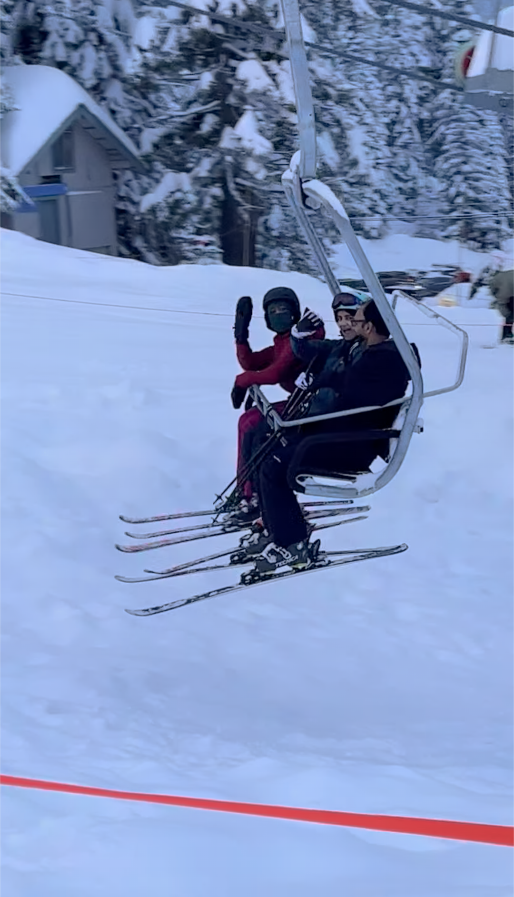

Interests
In this page I will be talking about all the interests I covered in the About Me page and more!
Here are the interests I will be covering in this page:I'm excited to share this part of my personality with you!
Piano
I have been playing the piano for about 8 years, but have only been playing seriously for around 4 years. I'm currently part of a Quartet group in the Seattle Conservatory of Music, and we are playing the Seitz Piano Quartet in G major Op. 35. We have a performance on April 27th which we are practicing for.
In my private lessons, I am currently playing Rachmaninoff Prelude No. 6 in Eb Major Op. 23, Greig Lyric Piece Op. 43 No. 1 (Butterfly), and Liszt Consolation No. 3 in Db Major. Last October, I had the amazing opportunity to go an event that Ray Chen was hosting where I got to play one of the pieces I was learning (Chopin Waltz in Ab Major Op. 69 No. 1), attend master classes, learn from different artists, and watch other performances. It was one of the most amazing music experiences I've been to.
To get an idea of different music experiences, I am trying out for some summer camps related to piano this summer. One program I tried out for was the Interlochen Arts Academy, which I am looking forward to going to this summer.
My favorite piece on the piano is probably one of Chopin's Ballades (either 1 or 4) or etudes. However, I love a lot of music on the piano, especially by Chopin, and it's extremely hard to pick a favorite.
Choir
I have been doing choir for about 3 years in Columbia Choirs of Metropolitan Seattle, and took voice lessons before that for about 3-4 years. I am a soprano in the Bel Canto choir. I love singing, as it is an outlet to all my daily activities. I especially like singing in choir because I love exploring the different harmonies people can make when they sing together. In the summer between 6th and 7th grade, I participated in choir's summer tour, to participate in The Golden Gate International Choral Festival in California. We got to sing with choirs all around the world, and it was truly a magical and life changing experience for me. My favorite song we sang so far is called "One Not One" by Derrick Skye, as the song has some very interesting lyrics that we had to analyze a little bit when we were singing it (it turned into an inside joke amongst our choir). I also sang this song in the Choir Festival, and performed as one of the soloists.
Photo of My Choir Singing in the Golden Gate Festival
Theater
I have participated in 4 plays at EPS, and have enjoyed the experience of being part of a production. I love being in a team and putting together a piece of art. The four plays I've been in at EPS are Space Pandas, Spamalot, Agatha Rex, and the Phantom Tollbooth. My favorite play so far was the Phantom Tollbooth, because I got to play the Mathemagician, and really enjoyed the role.

My Friends and I after the Phantom Tollbooth Production
Skiing
I started learning how to ski last winter, and I really loved it so I did it again this year. I did a lot of skiing this year, going on the ski bus at EPS, and skiing outside of my lessons with my friends. Next year, I am planning to train to become a ski instructor. The hardest slopes I've done on snoqualmie are Outback and Hog Wild.
My friend, her dad, and I on the ski lift.
Ice Skating
When I was in elementary school, one of the activities I did outside of school was ice skating. However, during COVID when the rinks shut down, I had to stop and lost motivation to start again. I really enjoyed it a lot, and still try to skate whenever possible with friends!
Me in an Ice Skating Performance/Competition
ACADEMIC TEAMS
- Math Team
- Debate Team
- Robotics Team
As described in the Classes section, I love math, and try to take as many opportunities as possible to participate in programs related to math. In math team, we prepare for the MOEMS and the AMC 8, which are competitions related to problem solving.
I am part of the EPS Middle School Debate Team and am in the experienced category. I like debate because it is very interesting to learn how to research and analyze a specific controvertial topic, and also get a bigger grasp on the issues in the real world. In middle school, students debate in the Seattle University tournament 3 times a year. I have been to 4 tournaments so far, and my 5th one will be on March 15th.
I was part of the EPS Upper School Robotics Team this year (FTC), and enjoyed learning about how robotics works being part of a team. Since I am new to robotics, I didn't quite have the skills needed to play a major role in helping with the competition. This summer, I am planning to learn some programming languages such as Python and Java, to play a bigger role and contribute more to the team next year.